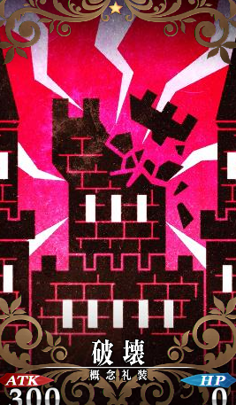

（251）打的不亏
（251）打的不亏
两条蓝色的龙之虚影跟随着半藏手中的长刀徐徐盘旋，邓加尔不知道这是一种龙的形象，但是他却能看懂这两条怪兽虚像的肢体语言，它们在寻找进攻的时机，明明这么看都是蓝色的光组成的虚像，但是少年却清楚的感受到它们的呼吸，就好像真正活着的存在一样。
很奇特，很有趣，很神秘……当然也很危险。
邓加尔知道一旦对方出手，自己恐怕很难避开这攻击，而且若是不小心被打中，可能会死。
‘我太大意了。竟然让敌人用出了麻烦的招数。接下来要当心，不要进入他的……嗯？！’
爆炸一样的危机感让少年浑身肌肉突然紧绷起，他侧身避开了半藏突刺而来的一刀。
‘好快！而且这距离……比之前遭遇的同样的招式更远了。之前应该只有十五米而已。’
然而召唤出神龙之魂助阵的半藏，借助这种力量大幅度提升了自己的身体强度，在这种状态下施展出来的‘秘剑·影’，攻击距离和威力全部提升了一倍，出招时间被压到三分之一秒。
然而，这样全面提升的绝杀一剑都让面前这个联邦战士给避开了，要知道刚刚那下突刺已经是他可以做到的极限一剑，为了达到那样的速度，他甚至连身体会遭受的反噬也不顾了。
可是半藏跨越三十米的距离，威不可挡的绝杀一剑在出招前就被邓加尔的直觉所捕获，最后的结果也就是吓了少年一跳而已，不过要说成效什么的，也是有的，因为半藏成功的把邓加尔拉入了自己的近战范围当中，现在有神龙助战的他，在白刃厮杀上已经超越了之前的自己。
现在的情况是，邓加尔不得不同时面对来自三个方向的致命攻击，对方手里那把致命的长刀，以及那两条更加致命的蓝色虚影，强烈的直感驱使着邓加尔宁可挨对方一刀也不愿意被那两个蓝色虚影给咬住——被砍一刀顶多是放点血而已，只要刀口不深就没有什么大碍，而被那蓝色的异兽虚影咬上一口的话，哪怕是自己这具被强化到非人水平的躯体也会瞬间丧命的。
更麻烦的是，两条蓝色的异兽虚影拥有极高的战斗智慧，不是那种只会那么几种攻击套路的蠢笨野兽，它们知道怎么样去配合战斗，而且还能把自己的外形优势发挥的淋漓尽致，明明长着蛇一样的长条身躯，但是在空中游动的方式却和鲤鱼一样灵活，让少年接连数刀落空。
它们时而用自己头上那对鹿一样的短角进行破坏力极大的冲撞，时而飞到高空然后用那两对鹰一样的利爪掠击，时而快速转身用力量极大的尾巴抽打，这一套攻击险些就把邓加尔打懵逼，少年一瞬间还以为自己是在和九种不同的异兽在战斗，这是他见过的最复杂的攻击模式。
‘这种战斗力和威严，绝对可以称之为神兽了。如果世界上真有这种神兽的话，我还真想和它较量较量啊。只可惜……你们再有灵性，也只是两个虚影而已，你们的套路，我看穿了！’
被压着打了一会之后，邓加尔发现这两条神兽虚影表现出来的灵性其实都是虚假的，它们是依照那个舞刀者藏在刀术当中的一些小动作来进行活动，只是对方的这些指挥神兽虚影攻击的小动作藏的太巧妙，几乎完全融合到了刀法姿势当中，所以初见此招的邓加尔被骗过了。
而另一边，半藏现在已经完全陷入了绝望状态，他为了活下去而祭出了家族秘术，用上了家族用来和神龙之魂配合战斗的秘传刀法，但是依旧拿不下这个联邦战士，只能勉强进行压制，但是随着时间的推移，已经连压制都没有办法做到，局势竟然开始一点点的被对方掰回去。
‘可恶……没办法了。只能使出最后的手段，完全解放神龙之魂，就算会受重伤也没办法了。’
这样想着，半藏开始极速后腿和邓加尔拉开了距离，而邓加尔先是一愣，他不明白敌人为什么要放弃还有挽回希望的近身战转而迅速的和他拉开一个不近不远的距离，然后邓加尔喜上眉梢的把猎刀收回取出了战弓——既然这家伙如此贴心配合，那么少年也就不可气了。
‘神龙之剑！这招用出之后，可以完全释放神龙之魂的力量，我这一剑下去，可是能削平一座小山的，然而作为代价，我起码两年都没有办法在召唤神龙之魂了，而且也会功力大废。’
不过这一击，是一定会杀死这名联邦战士，半藏对此充满了信心，这是传承自降临者的强大技能，岛田家族的历代先祖就是凭此绝学为龙骧皇室斩杀无数不服从正统的蛮夷高手的！
“竜神の剣を喰らえ！！！！！！”
两条神龙之魂在半藏这一剑的引导下以相互缠绕的姿态急速飞向邓加尔，然而在飞行过程中急速膨胀，搅碎岑天大树，犁伤大地，连空气也被狠狠的拧成一股螺旋，声势浩大。
但是在邓加尔看来，这样的攻击却比之前弱太多了。
‘大而无当，徒具其型，这种狂暴而又无法操控的力量，就是他最后的底牌了吗？那两头神兽虚影此刻已经灵性全无，完全退化成了凭本能肆虐的野兽，反而没有最开始的时候那样危险了……就算是虚影，也让我以猎人之身送它们一程吧。’
之前父亲有教导过的‘危险到值得你带着最高的敬意去狩猎以示尊重’这个概念，少年如今终于完全领悟，然后少年突然感觉某条潜藏在自己灵魂深处的‘线’活跃了起来，它把邓加尔和他手中握着的弓箭连成一体，少年感觉到箭仿佛成为了自己触感的延伸。
‘……找到了！当时的那一箭的感觉……原来是这样啊！’
“崩坏吧！”
新生之时已然降临！
没有光影，没有响声，甚至没有极致的速度，邓加尔的这支箭好像从没有力道的软弓里射出的一样无力，但是半藏竭尽全力斩出的神龙之剑却和这一箭有着次元级别的差距。
神龙的虚影，瞬间就被这一箭给扯的支离破碎，宛如风吹散了云彩那样，而后这一箭好像反过来吸收了神龙之魂的力量，开始以可怕的气势加速，然后轰然炸裂，爆炸的声势几里之外都能听得见——少年用的箭是普通的联邦制钢矢，根本不可能容纳神龙之魂的力量，紊乱并爆炸是很正常的发展。
还好两个人在追踪和反追踪的‘猎人游戏’里已经远远的离开了安科纳，甚至已经深入到了圣堂联军的控制范围边缘，要不然龙骧远征军恐怕会被惊动起来，至于惊动圣堂教会联军……这个就更不用担心，因为龙骧远征军之前的疯狂抵抗，导致了联军部分士兵产生了恐惧的情绪，所以联军最近一处兵营都在最近控制区边境的两公里之外，根本来不及派人过来。
此时，半藏的精神已经处于崩溃边缘，脑子里翻来覆去的都是对方射出那一箭时候的姿态。
岛田家引以为豪的神龙之魂竟然毫无抵抗之里的被正面击破了。
‘逃……逃……快点逃！这个联邦人根本不是自己可以对付的，他从一开始就不该挑衅对方，联邦是帝国的盟友，到时候只要露个面把事情说清就好，根本没有战斗的必要啊。’
只有二十六岁，还是个青年人的半藏无比后悔自己的莽撞，在东大陆时候的顺风顺水使得他渐渐变得傲慢起来，完全遗忘了家族老人教导的‘忍者要时刻保持恭顺和谦卑’的家族哲学。
但是，哪怕是在亡命的逃跑之中，半藏仍忍不住去回忆邓加尔的那一箭。
‘那是……多么的强大啊。’
爆炸的扬起的烟尘碎屑并没有阻挡邓加尔的视野，邓加尔看着仓皇而逃的半藏，冷酷的举起了手里的战弓，重新搭上箭拉到满。
‘算了。在这里击杀盟友密探的话，会给大小姐惹麻烦的，也对联邦不利……这次就饶他一命，如果再有下次，我就真的不好再放水了。’
因为领悟并射出了巅峰的一箭，内心的烦躁得到充分发泄的邓加尔，恢复了理智，然后将箭的落点从半藏的要害上挪开。
因为顾全大局，所以我不会杀你，但是你们龙骧一次一次的试探和挑衅是不是也过分了呢？从船上就开始监视，还用军队和舰队来威吓，这种强硬的态度是把我联邦当成小国了吗？
收敛一些对大家都好不是吗？
哦？还敢回头看？那么……就留下你一只眼睛吧。
……
…………
“啊~还是没人……”
阿萝看着空荡荡的房间，表情十分失望。
“已经快十天了啊。知道人去了哪里，连个请假条都不写，这工作态度也太散漫了吧？”
少女无聊的在邓加尔的房间里转了一圈，然后来到了少年的床前很没形象的扑倒在了上面。
“哇~真软啊~专门给伯爵大人弄来的床呢。床垫里面填的是棉花，比我小角色睡的兽皮褥子舒服多了。可恶的特权阶级……可恶的邓加尔。”
阿萝把头埋进软乎乎的床垫里小声抱怨着。
这里顺带一提，少年把自己房间的备用钥匙交给了阿萝，所以阿萝才能这样大摇大摆的进来。
“可恶的邓加尔……想找你帮个忙……你却不在……玩失踪……千万别出什么事情啊……”
软软的垫子非常催眠，再加上阿萝昨天晚上刚刚爆肝熬夜写报告，所以她很快就昏昏欲睡起来，正当她进入半睡半醒的时候，一个久违的声音突然传到了她的耳朵里。
“阿萝？你来我房间里有事吗？”
“嗯……有事……混蛋邓加尔……十几天不见人……”
几乎就要睡过去的阿萝昏昏糊糊的回答道。
……嗯~
…………嗯~嗯~
………………嗯？
“噫——！？”
少女顿时和装了弹簧一样从床上一跃而起，手舞足蹈，面色通红的说道。
“你回来了啊！邓加尔！那个……你听我解释，我其实……”
阿萝慌乱的语调戛然而止，变成了浓浓的担心。
“邓加尔……你受伤了？”
她看到失踪十几天后再次回来的少年衣着十分狼狈，联邦的军官制服破破烂烂，身上还有不少伤痕，其中最严重的的伤痕在他的左肩和左胸，那是一道血肉模糊的刀伤。
邓加尔全身上下有十几处伤，有的已经结痂，有的却还在往外渗血，而少年本人却带着没事人一样的表情，若无其事的对少女解释道。
“没事~都是些皮肉小伤，追踪一个麻烦的猎物之时留下的。”
“猎物？是……敌人吗？”
“不算，姑且是给了对方一个教训，没有给予最后一击，不过这样一战之后，我们周围会清净许多，应该不会有大胆的苍蝇嗡嗡叫了。”
邓加尔比较含蓄的说道，而阿萝点了点头，没有细问而是板着脸把少年往床上一推，让他坐下，然后转身离开了房间，走前嘱咐道。
“你先坐在这里，我马上回来。”
过了一会，阿萝带着药膏、药水、干净的手巾、绷带、剪刀、针线等一堆杂物回到了这里。
“愣着干什么？上衣给我脱掉，让我重新处理一下你身上的伤口。”
“这点小伤真的不碍事，放着不管自己也会……好……我脱……”
少年在少女的眼神中败下阵来，他脱掉了自己的破破烂烂的上衣，而阿萝则马上开始了处理少年身上部分被污染的伤口，邓加尔默默的感受着阿萝十指偶尔划过自己皮肤的触感，脸开始无法控制的变红，而在他身后的阿萝却看不见。
“呐~邓加尔……战斗的……很辛苦吧？”
询问的声音有些低沉，邓加尔从阿萝的话语里竟听出了些许愧疚。
可她在愧疚什么？
“不算太辛苦，受伤什么的，我很小的时候就习惯了。所以不用担心的~阿萝。”
小时候跟着父亲在山野里接受训练，学习猎人之道，受伤那是司空见惯的事情，比这更惨更严重的伤，邓加尔都受过。
“是吗？”
阿萝默默的应了一声，过来一会后，才用仿佛是挤出来一样的声音勉强笑道。
“你可真厉害啊。邓加尔……”